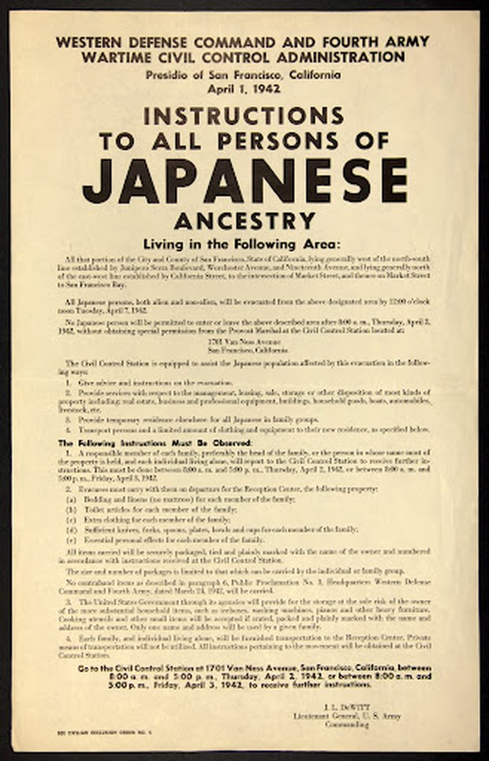

Drowning in the Record
You have been assigned to the Archive Audit Division. A new public exhibit -- The Complete Record: American History as It Happened -- is scheduled for automatic publication in 60 minutes.
Before it goes live, the archive must be verified. You will choose an audit role. That role determines which records you see first, which decisions you face, and what you will be asked to produce. The same history. Different conditions of judgment.
The escape is not from history. It is from the illusion that what you are given is complete.
All responses, evidence, and reflections are stored in Google Sheets. Nothing is saved locally.
Open the spreadsheet to verify it is accessible, then return here. All student data flows there in real time.
The Archive Ledger connection is pre-configured. Press Test Connection to verify it is live before students enter.
1. Click Test Connection above -- confirm it shows "connected."
2. Open the Google Sheet, run Archive Audit > Setup > Full setup v4 once to create all tabs.
3. Open Archive Audit > Teacher Tools > Open teacher config sidebar to set class periods and scoring weights.
4. Students enter first name, last name, and select their period from the dropdown.
Your role is not cosmetic. It changes which records you encounter first, which puzzles you face, which decisions you must make, and what you are asked to produce at the end.
You have arrived at the intake desk. The preliminary exhibit packet is on the surface before you. Before publication, you must complete a standard archive audit. What you notice first -- and what you are asked to do with it -- depends on your role.

This exhibit documents the cooperative spirit of the American civilian population during the Second World War. The record includes materials drawn from official government correspondence, photographic archives, and public information campaigns of the period 1942 to 1945.
All materials have been reviewed for historical accuracy and public appropriateness. The selection represents a comprehensive account of life on the American home front.
Caption for Photograph WRA-0043: “Japanese residents voluntarily relocate to assembly centers for the duration of the war, 1942.”
Provenance note for this intake form: Curated by J. Harmon, Chief Records Officer, National Memory Vault. Source institution: National Archives, Record Group 210 (War Relocation Authority records). Accessioned 1946. The exhibit title “Unity in Service” and the phrase “cooperative spirit” reproduce language from the WRA’s own wartime public relations materials, including the 1943 WRA pamphlet “Relocation: The Story of an American Movement.”
You are inside the official wartime record. The folders are clean, the labels precise, everything appears to be in order. The archive has been curated. That is not the same as saying it is truthful. Your role determines where you enter this archive and what you are asked to notice first.
You have left the sparse official archive. You are now inside a mediated public record -- broadcast news, photographic journalism, congressional testimony, official press briefings, protest documentation, and veteran accounts. There is far more here than in Room 1. The question is no longer what is absent. The question is: what does abundance do to your judgment? More sources do not mean better evidence. Visibility is not justice. Saturation is not completeness.
You are inside the circulation layer. A claim has spread across many sources -- news articles, textbooks, documentary films, encyclopedia entries. Each cites the others, or cites a common origin. Your task: trace the source family. Find the origin document. Determine whether the agreement between sources represents independent corroboration or networked repetition. Repetition that feels like agreement is one of the archive’s most effective trust mechanisms.
You are inside a platform environment. Sources arrive in a ranked feed -- top results, most-cited, most-linked. The interface has already made curatorial decisions. Ranking is curation. Prominence is not evidence. Fatigue is a historical condition: what changes in your judgment as you scroll? The archive of the contemporary internet is not neutral. It is structured by engagement, by advertising, by algorithmic selection. Your task is to read the platform as well as the sources on it.
You are at the final exhibit. An AI curator has synthesized all the materials you have passed through. The summary is coherent, well-sourced, and confident. It does not contradict itself. It does not flag uncertainties. It does not acknowledge what it could not find. The question is not whether the AI is lying. The question is what coherence conceals. Synthesis is a curatorial act. The smoother the summary, the more selection it required. Your task: audit the exhibit for what the smoothness has submerged.
Each component is required. A historical claim without a limitation claim is not responsible. A curation claim without a handoff decision is not complete. A remnant section is not optional -- naming what cannot be recovered is part of the historical argument, not a supplement to it. You do not escape the archive. You learn to enter it differently.